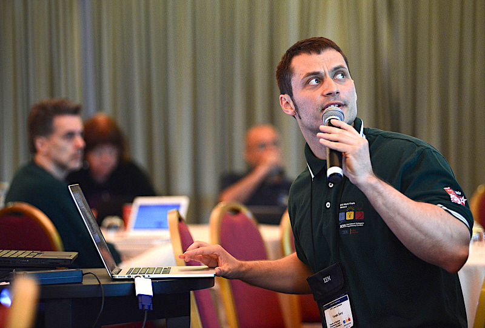

About Me
Personal Details
Tomas Cerny is an Associate Professor of Systems and Industrial engineering at the University of Arizona, Tucson.
He is in the Software Engineering unit managing Software Engineering programs. After earning an Engineer and Masters's
degrees from the Czech Technical University, FEE, and from Baylor University,
he has served as an Assistant professor at the Science and Computer Department at the Czech Technical University,
FEE, since 2009. Soon after earning a Doctoral degree in 2016, he returned to Baylor University to
join the Computer Science department. He was tenured in 2023 at Baylor
and moved as Associate Professor of Systems and Industrial Engineering at the
University of Arizona. His research focus is Software Engineering, Software Architecture, Technical Debt, Static Analysis, and Cloud-computing application maintance.
He served 15+ years as the lead developer of the International Collegiate Programming Contest Management System.
He authored nearly 200 publications, mostly relating to code analysis and aspect-oriented programming.
Among his awards are the eight best papers, the 2023 Baylor Scholarship Award, the Outstanding Service Award ACM SIGAPP 201
8 and 2015, and the 2011 ICPC Joseph S. DeBlasi Outstanding Contribution Award. He actively serves the scientific community
and was on the organizing committee for IEEE SOSE, ESOCC, SANER, ACM SAC, ACM RACS, and ICITCS.
CV